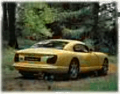
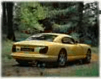

TVR Cerbera
 

Brake From 60-0mph in 2.8sec
0-150mph in 18.3sec
Specs(Cerbera 4.5)
Price |
$66,100(in England) |
Top Speed |
160+mph |
Acceleration |
|
Engine |
|
0-30mph |
N/A |
Type |
V8, 16valve SOHC |
0-60mph |
3.9sec |
Displacement |
4.5L(4475cc) |
0-100 |
8.3sec |
Power |
420hp@6750rpm |
1/4 mile |
13.3sec/106.7mph |
Torque |
380 lbs-ft@5500rpm |
Weight |
2,425 lbs |
Handling |
|
Gas mileage |
|
Skidpad |
N/A |
City |
N/A |
600ft slalom |
N/A |
Highway |
N/A |
Powertrain |
Front engined, rear wheel drive, 5 speed manual |
(? = incomplete data or unverified info, N/A = info Not Available)
Beyond the specs:
This is the British Viper, the virtual equivalent of the Dodge Viper's price/performance we can enjoy here in America. The differences are major however, where the Dodge Viper comes with a truck derived V10 (converted from iron to alloy Lamborghini), this TVR comes with a race derived V8. Another, difference is that while the Vipers huge V10 offers a bass filled growl, the TVR has a lighter racy snarl to it which is just as exciting. In addition, the Viper is tuned for massive low-end torque, while the Cerbera is tuned for higher rpm power (although it still has healthy torque). However, when you consider that the Cerbera is weighs almost 1000lbs less and has only 30 less hp it is obvious why it is much faster than a Dodge Viper. Also since it has narrower tires (8in by 17in) and still has a healthy amount of torque (if not quite up to the Viper's level) it can just as easily induce wheel spin. In addition, this car comes with allot more luxury than a Dodge Viper, and there are no complaints about comfort. Best of all (in my opinion) with a push of the button on its remote the car is unlocked completely allowing a push of one of three different a buttons to start and stop the engine and open the trunk. This car has a more conservative look than a Viper; it is still an attractive car and is easily identifiable as a TVR with those TVR rear lights. With the price of Vipers in Europe, the Cerbera is obviously the better deal but in the US, due to the cost of importing across the Atlantic the Viper offers a better deal. This car combines neutral handling, Viper beating performance and a race derived V8, at a Viper beating price (if you live in Europe). It also comes in the slower 4.2 version with a smaller V8 and the slowest the Speed Six version with an inline 6 engine.
~Oracle